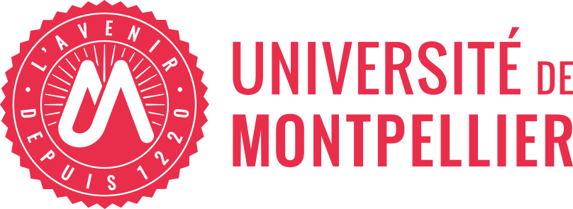

Mes études 
Je suis actuellement étudiante en deuxième année de BUT Techniques de Commercialisation à l’IUT de Montpellier, une formation qui me permet d’acquérir des compétences solides en marketing, en négociation commerciale, en communication et en gestion de projet. Au fil de mes études, j’ai l’opportunité de travailler sur des projets concrets et professionnalisants, ce qui me permet de renforcer mes connaissances théoriques tout en développant une réelle expérience de terrain.
Je suis passionnée par le marketing digital, un domaine qui allie créativité et stratégie. Plus particulièrement, je m'intéresse à la conception de packagings, à la création de supports visuels et à la production de contenus pour les réseaux sociaux. Mon objectif professionnel est de travailler dans le marketing numérique, notamment dans la communication en ligne, la gestion des réseaux sociaux ou la stratégie de marque.
Ma vie professionnelle
En parallèle de mes études, je travaille en CDI chez Apple Odysseum, où j’occupe un poste de 8 heures chaque samedi. Cette expérience professionnelle m’offre l’opportunité de développer des compétences clés telles que la relation client, la communication et la gestion de situations variées. Elle me permet également de renforcer ma capacité d’adaptation, mon sens du service et ma réactivité au sein d’un environnement dynamique et exigeant.
Mes loisirs
En dehors de mes études et de mon travail, mes loisirs occupent une place importante dans mon quotidien et m’aident à garder un bon équilibre. La photographie est l’une de mes passions principales : j’aime capturer des moments, des ambiances et des détails qui racontent une histoire. Le badminton et le patin à glace me permettent de rester active, de me vider l’esprit et de me dépasser, tout en m’apportant discipline et persévérance. J’apprécie aussi des activités plus calmes et créatives, comme le soin des ongles, qui me permettent de me détendre tout en laissant parler mon sens esthétique. Enfin, la musique m’accompagne chaque jour et les concerts sont pour moi une véritable source d’énergie et d’inspiration. Ces loisirs reflètent une personnalité créative, dynamique et curieuse.

Mes Intérêts académiques
Dans mon parcours en BUT Techniques de Commercialisation, certaines matières m’ont particulièrement marquée, car elles mêlent réflexion, analyse et créativité, un équilibre qui correspond parfaitement à ma manière de travailler. Les mathématiques et l’informatique sont des domaines dans lesquels je me sens à l’aise : ils m’aident à structurer ma réflexion, à analyser des données et à résoudre des problèmes de façon logique, des compétences essentielles en marketing digital.
À côté de cet aspect plus analytique, je prends beaucoup de plaisir dans les matières créatives comme l’audiovisuel, le marketing digital, l’innovation ou la création d’entreprise. Ces cours me permettent d’exprimer ma créativité, d’imaginer des concepts et de travailler sur des projets concrets. J’apprécie particulièrement les moments de brainstorming, de conception visuelle et de réflexion stratégique, où une idée prend progressivement forme pour devenir un projet abouti.